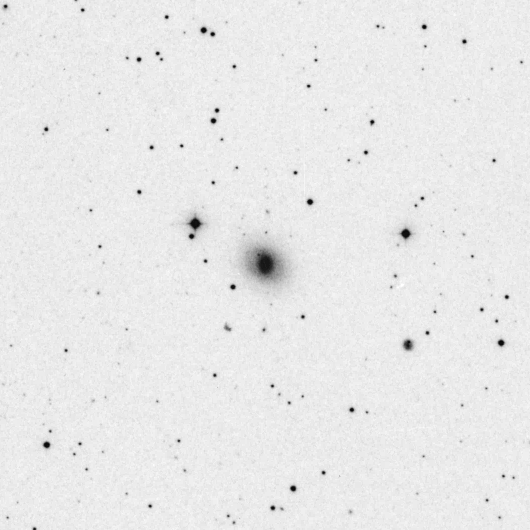
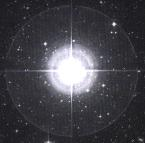

|  |
Η εικόνα του γαλαξία NGC 3516
- Μετρήστε το μήκος του μεγάλου άξονα του γαλαξία, όπως αυτός προβάλλεται στον νυκτερινό ουρανό (Ο γαλαξίας βρίσκεται στο κέντρο της εικόνας).
- Τοποθετήστε τον κέρσορα στο ένα άκρο του μεγάλου άξονα και πιέστε με το αριστερό κουμπί του "ποντικιού". Στο παράθυρο φαίνονται οι συντεταγμένες (x,y) του εικονοστοιχείου (pixel) που έχετε επιλέξει.
- Επαναλάβετε την διαδικασία για το άλλο άκρο του μεγάλου άξονα (κατά την διαγώνιο). Στο παράθυρο φαίνονται οι συντεταγμένες (x,y) του δεύτερου εικονοστοιχείου που έχετε επιλέξει.
- Καταγράψτε το γωνιακό μέγεθος του γαλαξία, όπως δίνεται στο παράθυρο.
- Αν έχετε κάνει κάποιο λάθος, ή επιθυμείτε να επαναλάβετε την μέτρησή σας, πιέστε το εικονίδιο "Επανάληψη"
- Χρησιμοποιήστε το εικονίδιο του αστέρα για να επιστρέψετε στη σελίδα επιλογής γαλαξιών.
Συντεταγμένες των εικονοστοιχείων (pixels)
Eπανάληψη
 |